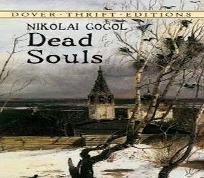

Dead Souls (Russian: «Мёртвые души», Mjórtvyje dúshi) is a novel by Nikolai Gogol, first published in 1842, and widely regarded as an exemplar of 19th-century Russian literature. The novel chronicles the travels and adventures of Pavel Ivanovich Chichikov (Russian: Павел Иванович Чичиков) and the people whom he encounters.
 back